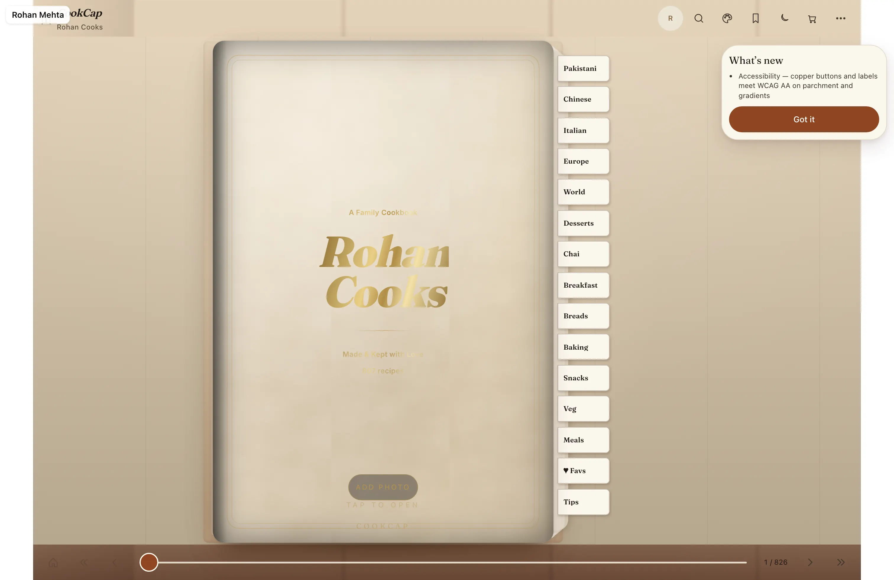

Illustrative story Illustrative story. People and data are fictional.
CookCap · London, UK
How Rohan meal-plans without heroics
Rohan plans on laptop Sunday, cooks from phone, shops from iPad list.
“Tuesday still has a dinner.”

Before and after
Illustrative numbers from a fictional week.
Before
After CookCap
A day with Rohan
-
Sunday plan
Sunday laptop meal plan — five dinners that survive an 8pm arrival, not a fantasy chef schedule.
-
Phone cook
Phone recipe on the counter while he cooks; steps big enough to read with wet hands.
-
iPad shop
iPad shopping list on the walk to the shop; Tuesday still has a dinner because the list existed.
-
Laptop tweak
Laptop tweak for next week — swap one night, keep the spine of the plan intact.
-
Phone
Phone tomorrow reminder. Takeaway is a choice now, not the default.
Watch it
A day across devices — silent walkthrough with captions. No autoplay with sound.
Read transcript
Rohan plans on laptop, cooks on phone, shops on iPad. Fictional.
Features Rohan uses
Illustrative story. People and data are fictional.